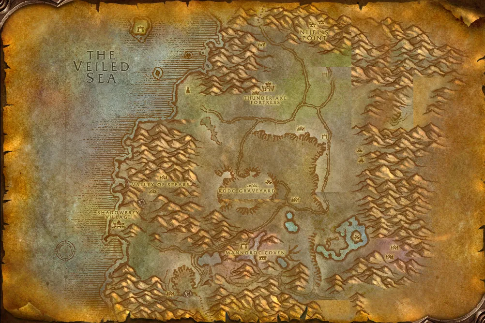

Accès
 Entrée Désolace 29.1, 62.5
Entrée Désolace 29.1, 62.5 5 joueurs · niveaux 45 à 51
5 joueurs · niveaux 45 à 51 11 quêtes · 9 boss
11 quêtes · 9 boss
Le point rouge marque l'entrée du donjon.
Toutes les zones sont sur notre carte interactive.
Les grottes sacrées des centaures de Désolace, où repose la princesse Theradras.
📅 Mise à jour le 4 novembre 2026🛠 Patch 1.60.1.70755

Entrée Désolace 29.1, 62.5 5 joueurs · niveaux 45 à 51 11 quêtes · 9 bossLe point rouge marque l'entrée du donjon.
Toutes les zones sont sur notre carte interactive.
| Objet | Type |
|---|---|
| Coeur d'éclat de gemme | Cou |
| Miséricorde de calcinite | Main droite |
| Jambières élémentaires de Rockridge | Jambes |
| Anneau de noirepierre | Doigt |
| Brassards de la princesse de pierre | Poignets |
| Oeil de Theradras | Tête |
| Sceptre de la princesse Theradras | Deux mains |
| Objet | Type |
|---|---|
| Heaume de la montagne | Tête |
| Gantelets poigne-de-roc | Mains |
| Pierre des nuages | Main gauche |
| Poing de pierre | Main droite |
| Objet | Type |
|---|---|
| Griffe de Celebras | Main gauche |
| Drapé de gardien du bosquet | Dos |
| Coiffure de devin | Tête |
| Objet | Type |
|---|---|
| Fouet des satyres | Une main |
| Jambières des Entourloupeurs infernaux | Jambes |
| Echarpe en crin de satyre | Taille |
| Objet | Type |
|---|---|
| Etreinte de la nature | Torse |
| Armure mycosienne | Torse |
| Couvre-chef d'efflorescence | Tête |
| Objet | Type |
|---|---|
| Sandales de Vinerot | Pieds |
| Spallières de peau végétale | Épaules |
| Ceinturon de chlororésille | Taille |
| Jambières de Brusslehide | Jambes |
| Objet | Type |
|---|---|
| Coeur de Noxxion | Bijou |
| Fusil nuisible | Distance |
| Menottes de Noxxion | Poignets |
| Objet | Type |
|---|---|
| Bottes en écailles de crocilisque albinos | Pieds |
| Hache Gatorbite | Deux mains |
| Mantelet de Grippe-charogne | Épaules |
| Objet | Type |
|---|---|
| Carabine Mégatir | Distance |
| Targe Hypertech de Gizlock | Bouclier |
| Epée focale de l'Inventeur | Une main |
Butin d'après les données de WoW Classic : Forever a ajouté de nouveaux objets dans les donjons, la liste sera complétée en jeu. Seuls les objets de qualité inhabituelle et mieux sont listés. Passe la souris sur un objet pour voir ses caractéristiques (info-bulle Wowhead), ou clique pour ouvrir sa fiche.
Donnée par : Uthel'nay (Orgrimmar)
Récompense : Pendentif Ombréclat zélé · Pendentif Ombréclat prodigieux
Donnée par : Archimage Tervosh (Marécage d'Âprefange)
Récompense : Pendentif Ombréclat zélé · Pendentif Ombréclat prodigieux
Donnée par : Saule (Désolace)
Récompense : Robe de sagacité · Casque de Vif-anneau · Cotte d'anneaux implacable · Espauliers du colosse de pierre
Donnée par : Vark Battlescar (Désolace)
Récompense : Anneau Woodseed · Gantelets griffebranche · Ceinturon d'armoise
Donnée par : Talendria (Désolace)
Récompense : Anneau Woodseed · Gantelets griffebranche · Ceinturon d'armoise
Donnée par : Paria centaure (Désolace)
Récompense : Marque de l'Elu
Donnée par : Celebras le Racheté (Maraudon)
Récompense : Sceptre de Celebras
Donnée par : Cavindra (Désolace)
Donnée par : Gardien Marandis (Désolace)
Récompense : Lame de Thrash · Bâtonnet de résurgence · Visée des Gardiens verdoyants
Donnée par : Selendra (Désolace)
Récompense : Lame de Thrash · Bâtonnet de résurgence · Visée des Gardiens verdoyants
Donnée par : Esprit de Zaetar (Maraudon)
Noms des quêtes, des PNJ et des objets d'après les données du jeu (Polestar, CC BY 4.0, et Factoruide/Questie).